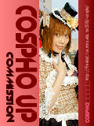

嗯!!一切開通後....又回到工作上!!不過今天好像仍是心思未能集中....
首先是把putty 還有winscp等登錄備份好, 也寫了自動備份script. 另外也把.... domain -> ip -> netbios over tcp/ip -> net use 的自動pl檔改版, 在家�埵蛦s的狀況下....就直接連內ip啦~ 另外, 如果把notebook帶回家時, 一開機就不用載入開後門程式了~ 這個呢....在bat 檔內小改一下, check logonserver 這個變數....搞定! :D
今天還把新版三種加舊版一種的cospho名片洗出來~ 一張4x6 是4 元, 切1/4 後.... 每張成本為1 元~ 剛拿到時覺得色偏掉沒原來PC上看好看, 剛剛再看一次就覺得還好.... 只是差了一點點啦....O_O 嗯!!把新三舊二五個並排如下, 五彩不錯看吧~ :P
|  |
早上又看到那隻兔子....=_= 在我上班必走過的路上有個籠子內養的, 大胖隻, 整天不動瞇眼或吃蘿蔔....真是太....笨....肥....了....
嗯!!基本上電池也充了!!名片也有了!!接著....想準備個墨鏡.... (以擋掉那已經沒救了的眼袋) ....還有個腰包 (因為名片太多了塞不下口袋) .... 明天就一樣~ 上~ 工~ 囉~~~
PSP 方面, 裝了8 , 昨天晚在花了一個小時踹, 大部份功能差不多, 不過.... 界面上加的華麗度讓它操作速度上變得有點慢....O_O 但但最重要的, 內建了一整套 看樣子功能很強的script系統, 看了些它附的....有極多information及flow control的 function!!我猜應該可以寫出很猛的動態調整功能!! 不過想應用它我看可能得等到下次活動了吧....短期內沒法子馬上讓它上工....
這週為了自己似乎變寬了些....戒除了老是去吃那家蝦捲+雞排飯的習慣, 改為水餃鍋貼....用餐費由115 降為60 , 肥度也降了約四成吧....肚肚滾開!!